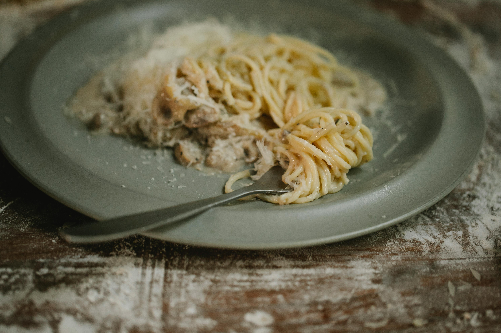

Home

Description
Carbonara is one of Italy's most beloved pasta dishes, and for good reason.
It's quick, simple, and made from just a handful of ingredients that most people already have at home.
The trick is in the technique — the eggs and cheese create a creamy sauce without any cream at all. Once you get the hang of it, it comes together in under 20 minutes.
Cooking Directions
Ingredients
- 400g spaghetti
- 150g pancetta of bacon, diced
- 3 eggs
- 80g Parmesan, grated
- 2 garlic cloves
- Salt and black pepper
- Olive oil
Steps
- Cook spaghetti in salted water until al dente. Reserve a cup of pasta water before draining.
- Fry pancetta and garlic in olive oil until crispy. Remove garlic.
- Whisk eggs and Parmesan together in a bowl. Season with pepper.
- Add hot pasta to the pan with pancetta. Remove from heat, pour over egg mixture, and toss quickly. Add pasta water as needed to loosen.